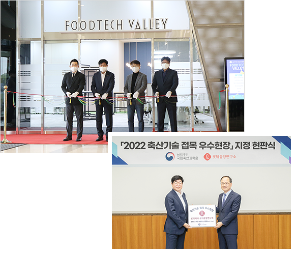

2022
11
푸드테크 벤처 육성을 위한 공유 오피스 「Foodtech Valley」 개관
10
농촌진흥청 국립축산과학원 지정 ‘축산기술 접목 우수 현장‘ 지정
05
식품안전 메타버스 교육장 「롯데메타에듀빌」 개관
01
롯데 식품사 디자인센터 및 공정 연구 분야 통합 편입
2021
02
연구소 사내벤처 1기 「냠냠연구소」 출시
2020
06
과학기술정보통신부 주최 IR52 장영실상 수상
(파스퇴르 항로타 위드맘 분유)